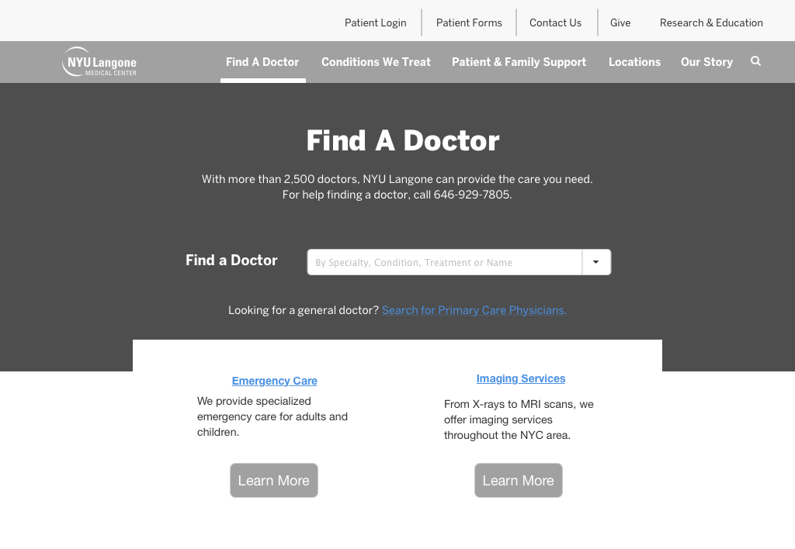
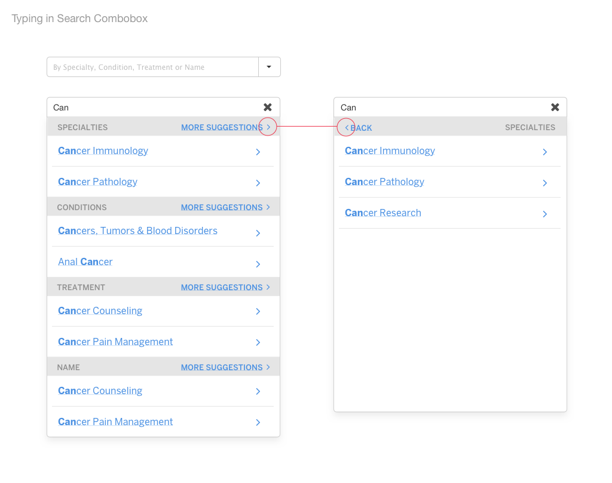
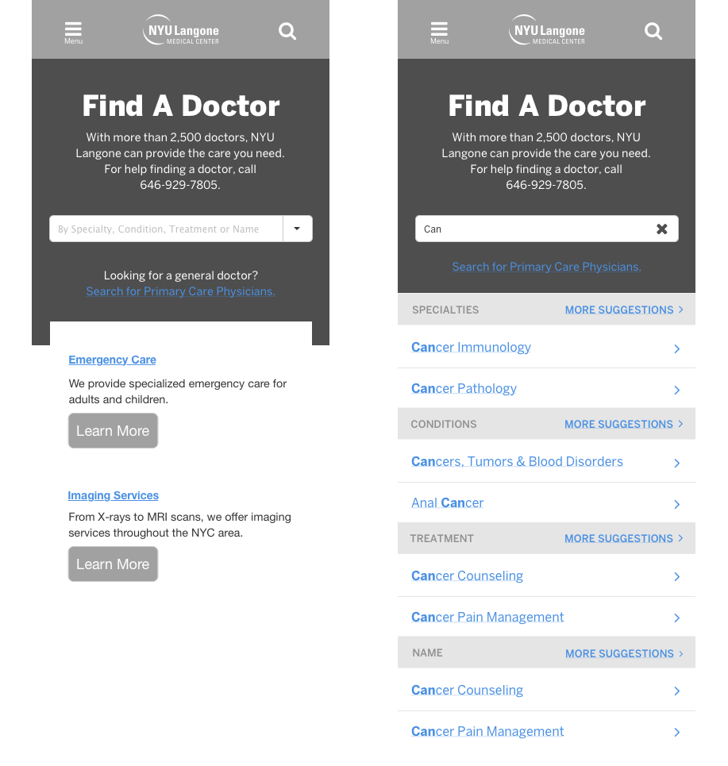

{{ page.description|markdownify }}
How do we make it easier for patients to find the right doctors on NYULanogne.org?
To help us better understand our key usability issues, I created user stories and ran tests on the current Find a Doctor website.
"It’s not a bad page, if you know exactly what you’re looking for... maybe the Conditions and Find a Doctor page could sort of be one super page, where you can just type in hernia and then you know, you can find a doctor. Could be easier."
I worked with stakeholders to redesign both the way that you search for doctors, and how you filter the results. This redesign took into account all devices, as NYULangone has a high mobile presence.
We wanted to have users search for the appropriate specialty, condition, treatment or name first, before providing filters. That is why the single searchbox is the new focal point of the Find a Doctor page and module. After the initial search, insurance and location are shown as the highest priority filters on the results page.
  Using the approved wireframes as a framework I created the final UI in Sketch. In order to test our designs, provide context for the developers, and socialize these improvements across the company I created interactive protoypes of the new Find a Doctor. You can play with them below.
After implementation I interviewed and sent surveys to users at the call center. The feedback they gave me was invaluable. It was great to hear about how these improvements could help make their jobs easier, as well as to hear about their pain points that still existed.
Analytics were a key part of this development process, and future insights. We want to make sure that we measure the success of our solutions with data.
Some features had to be cut for the MVP and initial launch. These will be added in the next release.